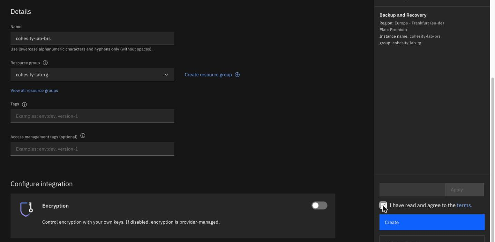
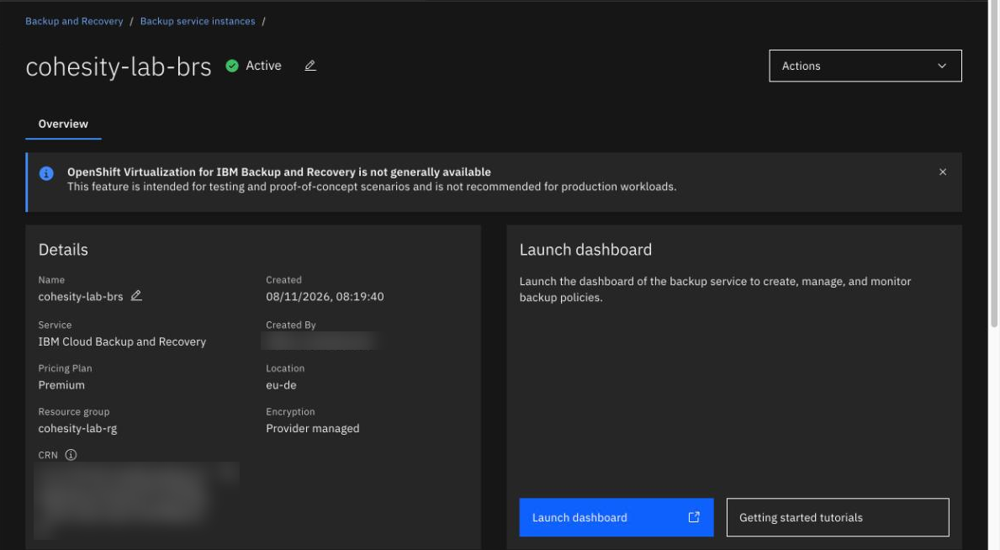
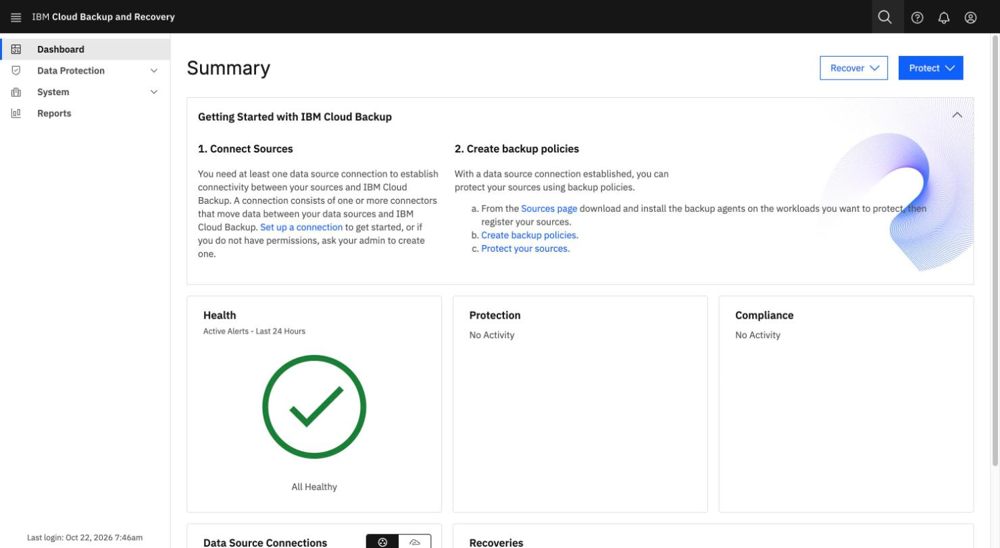
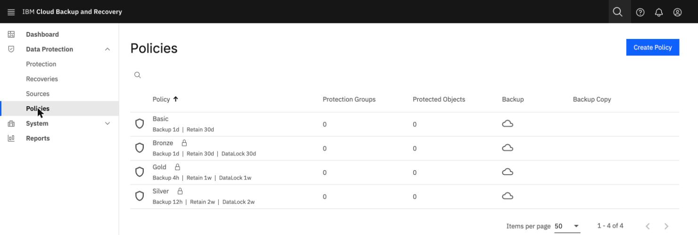
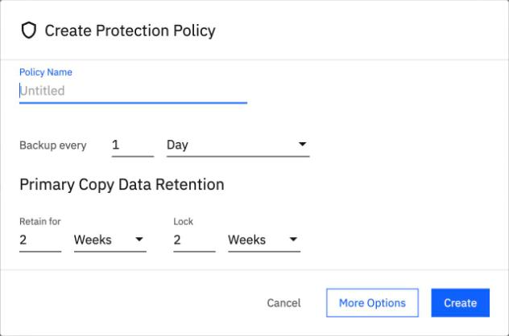
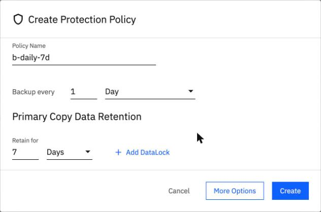
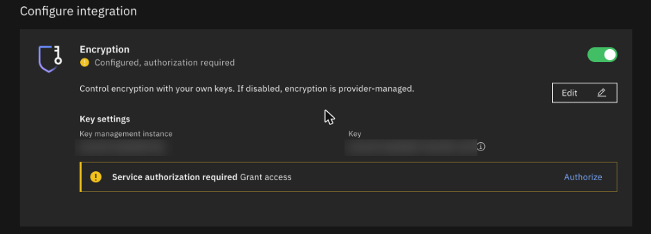

Order an instance and read what it starts with
By the end you can follow the order form, say what a new instance contains, and predict which of its four starting policies carries a data lock.
Northgate Freight is a made-up company. It has decided to try BRS and orders its first instance in Frankfurt. Then it looks at what it was given.
Every screen and number in this unit comes from real runs in our lab. Names of people, servers and addresses are blurred or left out; the lab's instance name and resource group appear as they were.
Order the instance and wait for it
These screens come from the IBM Cloud console in our lab. Click where you would click. After two misses the right place is marked.

You have set the Location to Frankfurt (eu-de) and typed a name. Which line tells you the plan you will get?
Show where
Right. There is no plan to choose. The summary on the right shows Plan: Premium, and Premium is the only plan.
Where is the switch that decides whether you bring your own encryption key?
Show where
Right. The Encryption switch under Configure integration. The text beside it says: "If disabled, encryption is provider-managed." Here it is off. Step 4 shows what it looked like when the page opened.

You clicked Create and the page opened with the state Pending. Where do you see that the instance is ready?
Show where
Right. Active, next to the name. Refresh the page to see it. Times varied in our lab: the instance was Active at the first check after 14 minutes in one test, after 5 minutes 26 seconds in another, and in under 3 minutes 22 seconds in the console run. The page also shows a notice that OpenShift Virtualization for IBM Backup and Recovery is not generally available.
Where do you click to open the instance's own dashboard?
Show where
Right. Launch dashboard opens it in a new tab. In our lab the tab stayed blank for about two minutes after signing in again, then showed the Summary page. Wait; do not close it.
Which policy has no lock?
The instance is Active. Northgate has not made anything yet, but IBM made four policies for it. Each has a schedule and a retention time. A data lock means a backup cannot be deleted until the lock ends.
A new instance has four policies: Gold, Silver, Bronze and Basic. Which one has no data lock?
Show the answer
Basic.Gold, Silver and Bronze each carry a data lock equal to their retention. Basic is daily, kept 30 days, with no lock. We checked this on a new instance, in the console and with the command line.
Policy Backup every Kept Data lock Gold 4 hours 1 week 1 week Silver 12 hours 2 weeks 2 weeks Bronze 1 day 30 days 30 days Basic 1 day 30 days none
Northgate makes a test backup with Gold and then wants to delete it the same day. What happens?
Show the answer
A backup made with Gold, Silver or Bronze cannot be deleted until the lock ends, so use Basic or your own policy for a test. A locked backup also cannot be deleted "not even by an administrator".
Read what the instance starts with
Now Northgate opens the dashboard and looks at the policies.

The dashboard has opened. The Getting Started panel lists two steps. Which comes first?
Show where
Right. 1. Connect Sources: you need at least one data source connection before you can protect anything. Step 2 is to create backup policies. Health shows All Healthy and there is no activity yet.

Open Data Protection > Policies. Which policy runs every 4 hours?
Show where
Right. Gold: Backup 4h, Retain 1w, DataLock 1w. A padlock marks the three policies that carry a data lock. Basic has none. The Protection Groups and Protected Objects columns all read 0.

Northgate clicks Create Policy to make its own. Where is the lock the dialog fills in for you?
Show where
Right. Lock 2 Weeks, next to Retain for 2 Weeks. A locked backup cannot be deleted until the lock ends, not even by an administrator.

Northgate does not want a lock on this policy. The lock has been removed. What does the dialog show in its place?
Show where
Right. + Add DataLock. To remove the lock, point at the Lock field and click the minus sign that appears. In our lab the policy was saved as "Retain 1w" with no lock.
A default you did not choose
The last field Northgate checks is the one that matters most: whose keys protect the data.
Northgate wants provider-managed encryption keys. The create page opens as shown. What does it do before clicking Create?

Show the answer
The switch was on by default, already filled in with a Key Protect instance and root key from another project in the account, with a warning "Service authorization required". Switching it off gives an instance with provider-managed keys. Unit 4.4 covers using your own key.
After the order, the instance page shows Encryption: Provider managed. Does that prove the switch was off?
Show the answer
The page shows "Provider managed" for an instance with your own key too, so it does not prove the switch was off. The Key Protect registrations list does (the kp registrations command).
Three questions
Which of the four starting policies has no data lock?
Show the answer
Basic: daily, kept 30 days, no lock. Gold, Silver and Bronze carry a lock equal to their retention.
Northgate opens Create Policy and accepts the dialog as it opens. What is true of the backups it makes?
Show the answer
The dialog fills in Retain for 2 Weeks and Lock 2 Weeks. A locked backup cannot be deleted until the lock ends, not even by an administrator.
Review from unit 1.3. How does BRS charge for backup storage?
Show the answer
A per-GB-hour metric, at a price that depends on the region. The catalog shows no instance fee or per-source fee.
You can order an instance and read it
The create page shows Plan: Premium, and its Encryption switch may be on by default. The instance goes from Pending to Active, and you open its dashboard with Launch dashboard. A new instance has four policies: Gold, Silver and Bronze carry a data lock equal to their retention; Basic has none. The Create Policy dialog adds a 2-week lock by default.